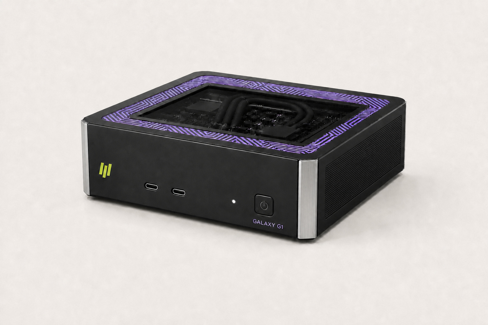

DESKTOP PERSONAL AI SYSTEM
TITAN G1
把本地模型原型、智能体、微调与推理带到开发者桌面，并通过 HOLYFLOW 平滑走向 G8 节点和 G72 集群。

CLOUD AI SYSTEM
为生产级 AI 构建的可扩展云端智算系统。
TITAN SYSTEMS

把本地模型原型、智能体、微调与推理带到开发者桌面，并通过 HOLYFLOW 平滑走向 G8 节点和 G72 集群。
面向开发、微调与企业推理的模块化节点，可配置最多 8 张 NOVA 加速卡，并为高速互联与液冷接入预留系统边界。

把计算节点、交换网络、液冷分配、遥测与管理整合为完整机柜，面向规模训练和高并发生产推理。
G1 面向需要私有数据、本地低延迟和随时可用算力的开发者、研究人员与数据科学团队。统一软件环境让原型可以在桌面验证，再迁移到数据中心和云端系统。
COMPARE TITAN SYSTEMS
| 规划维度 | TITAN G1 | TITAN G8 | TITAN G72 |
|---|---|---|---|
| 系统形态 | 桌面级个人 AI 系统 | 4U 计算节点 | 全柜集成系统 |
| 目标加速器规模 | 单机集成算力 | 最多 8 张 | 最多 72 张 |
| 互联层级 | 双机高速互联规划 | 节点内 PCIe + HC-Fabric | 整柜无阻塞网络规划 |
| 散热方案 | 低噪声桌面风冷 | 风冷 / 液冷可选 | 整柜液冷与热管理 |
| 管理边界 | 个人 / 工作组 | 单节点 | 整柜统一管理 |
| 目标工作负载 | 原型、智能体、本地推理 | 开发、微调、推理 | 训练、微调、生产推理 |
规划目标可能随板卡、网络、供电、散热与机房验证结果调整。
以模块化计算单元构建可扩展资源池。
围绕模型通信模式规划拓扑与数据流。
部署、监控、故障定位与容量扩展统一管理。
每一次合作都连接架构、软件、验证与生产运营。
合作路径
FAQ
适合需要私有化、主权 AI 或大规模模型服务能力的组织。
平台方向同时覆盖训练、微调与规模推理，实际支持范围以验证清单为准。
结合模型大小、吞吐、延迟、并发、功耗与可用性目标进行容量规划。
选择你的阅读视角
技术评估框架
| 设计维度 | 关注问题 | 建议验证方式 |
|---|---|---|
| 计算节点 | 节点如何形成可调度资源池 | 验证节点内并行、故障隔离和工作负载切换 |
| 集群互联 | 通信是否匹配训练与推理数据流 | 使用实际模型测试通信重叠和拓扑效率 |
| 管理平面 | 如何统一配置、调度和观察系统 | 验证资产、任务、健康与告警数据闭环 |
| 数据路径 | 模型、检查点和数据集如何高效流转 | 检查存储接口、缓存策略和数据准备流程 |
| 可用性 | 故障如何被检测、隔离和恢复 | 执行故障注入、恢复和长时间稳定性测试 |
| 机房集成 | 如何满足目标设施条件 | 联合核对空间、电力、散热、网络与维护通道 |
工作负载地图
覆盖预训练、微调、评估与检查点管理。
关注模型服务、检索、工具调用和并发工作流。
强调数据控制、专属容量和本地运营。
支持可重复实验、资源共享和多团队协作。
采用与部署路径
建立软硬件基线、模型覆盖和运行流程。
围绕目标容量、可用性和运维边界进行系统设计。
通过标准化配置、遥测和扩容方法持续复制。
生产运营关注点
健康检查、故障隔离、恢复与长时间验证。
启动、身份、访问、更新与数据边界规划。
把模型行为与系统状态连接起来的遥测。
版本、兼容、回滚、维护和支持。
资源与状态
本网站提供产品方向、架构原则、工作负载与评估框架。
工作负载定义、环境要求、成功指标和测试计划。
规格、兼容矩阵、SDK、文档、发布说明与模型验证状态将按成熟度开放。
计算、网络、散热和系统软件在同一平台内联合优化。
统一软件环境承载从模型开发到生产服务的完整生命周期。
准备好开始了吗？